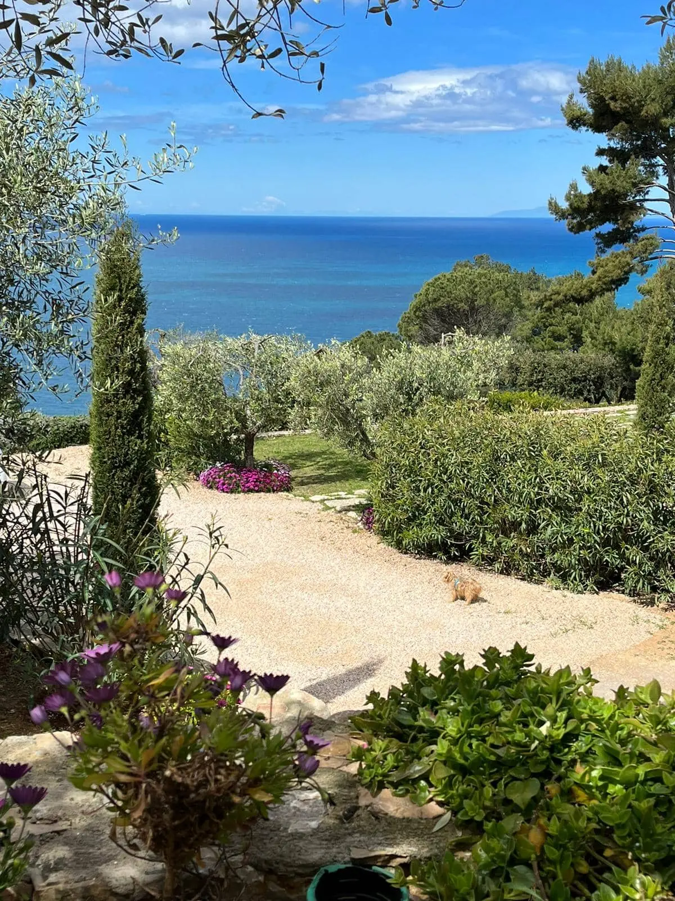

Posizione
Stella d’argento si trova a Porto Santo Stefano, meta turistica per le più belle spiagge e calette con il mare cristallino,nonché per il porto con i traghetti per l’isola del Giglio e l’isola di Giannutri ma anche per gli yacht e le barche private. Ci sono anche numerosi centri di immersione e noleggio barche. Porto S.Stefano è rinomata anche per il centro storico con la Fortezza spagnola del 1636 la Torre dell’argentiera del 1442.

Camere
Le camere sono ampie e hanno il bagno privato con la doccia, alcune hanno la vista mare, e un patio con comode poltroncine per godere dell’atmosfera magica dell’arcipelago toscano. Inoltre sono corredate di Wi-Fi, aria condizionata,phon,TV,frigo e macchina del caffè. Tutte beneficiano di un panoramico terrazzo vista mare ideale per le colazioni e per gli aperitivi.
Alcune camere hanno la vista mare e altre la vista sul giardino.

Servizi
Le camere sono accoglienti offrono aria condizionata, Wi-Fi gratuito, televisore, frigo, prodotti da bagno, phon, posto auto coperto gratuito e colazione inclusa.
Il B&B è immerso in un giardino di olivi e oleandri e dista 5 km dal centro del paese, dove ci sono molti ristoranti specializzati in cucina toscana e pesce fresco.